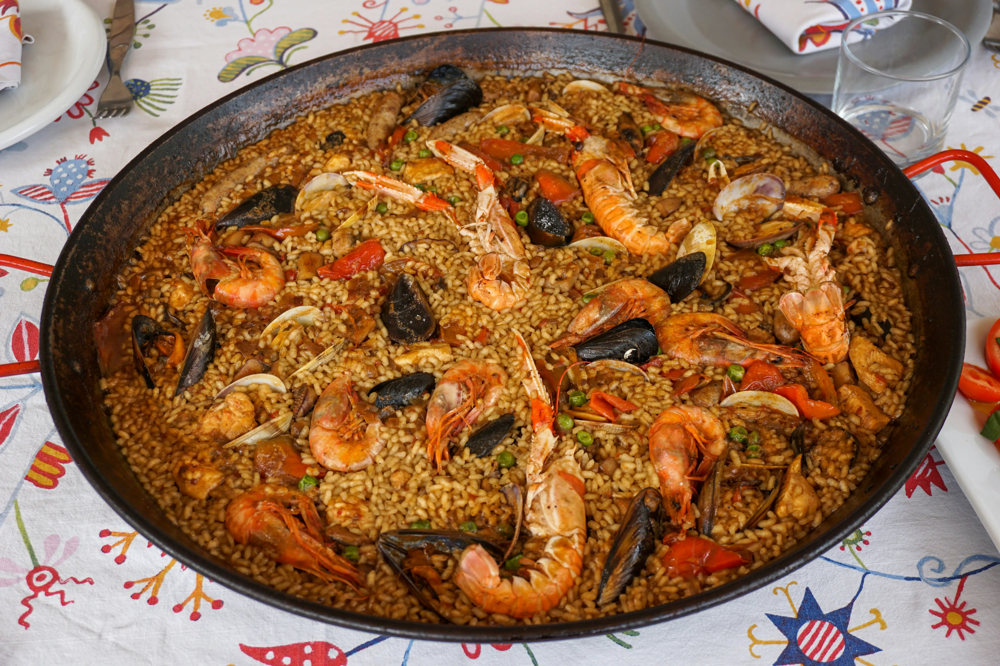
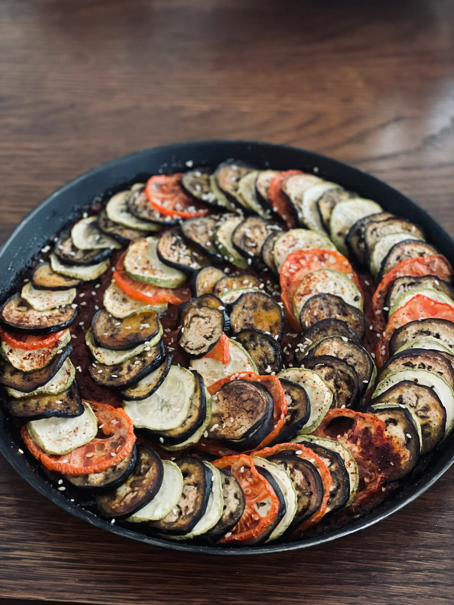
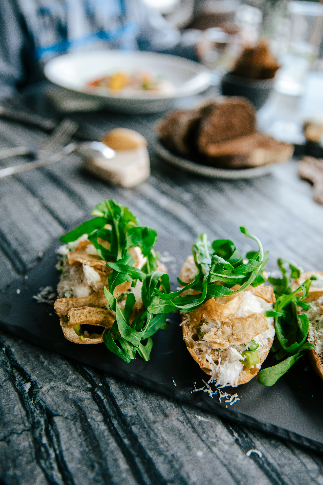
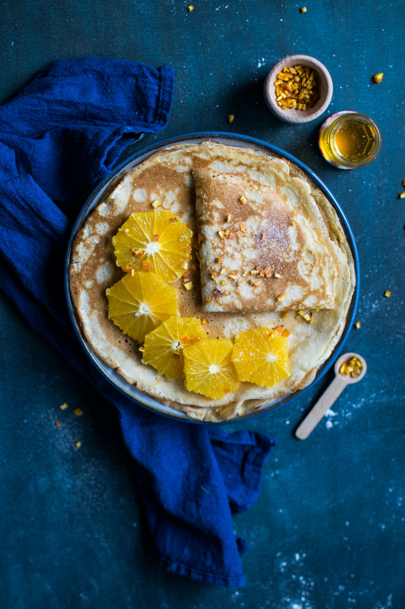
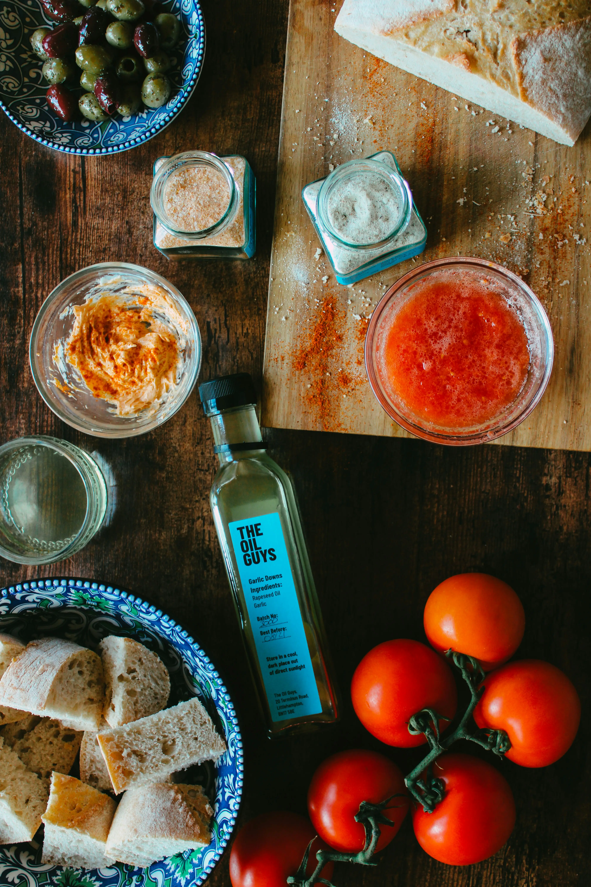

Descobreix els sabors que hem conegut


Ratatouille Provençal
Un plat vegetal típic del sud de França, ple de color i sabor fresc.
Veure més


Crêpes Bretonnes
Dolces o salades, les crêpes franceses són un autèntic plaer de la Bretanya.
Veure més
